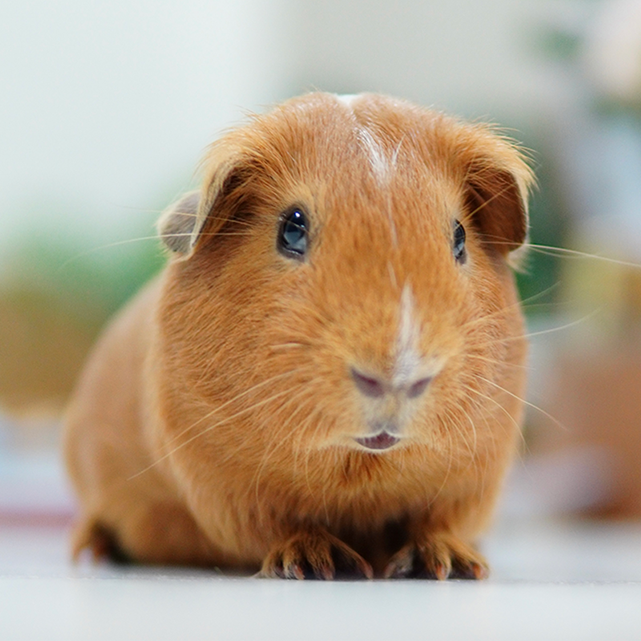

Our Mission
Twin Cities Animal Rescue is a community-driven nonprofit dedicated to rescuing, rehabilitating, and rehoming companion animals across the greater Minneapolis–Saint Paul metro area. We believe every animal deserves a safe home, every volunteer deserves a meaningful role, and every neighbor deserves the chance to be part of the solution. Through foster care, adoption, and community partnerships, we connect vulnerable animals with the people and resources they need to thrive.

Our Impact
Since our founding, our volunteers, foster families, and donors have helped us make a measurable difference for animals and the people who love them:
- More than 2,400 animals placed into loving, permanent homes.
- Over 650 active foster families caring for pets in transition.
- More than 18,000 volunteer hours logged in the past year alone.
- Partnerships with 30 local shelters, clinics, and community organizations.
- A 96 percent live-release rate for animals entering our program.
How You Can Help
Rescue is a team effort, and there is a place for everyone in our community. Whether you have time, a spare room, or resources to share, your involvement directly shapes an animal's second chance at a happy life.
- Adopt: Give a rescue pet a permanent, loving home.
- Foster: Open your home temporarily to a pet in need.
- Volunteer: Lend your time at events, transports, or care shifts.
- Donate: Help cover food, medical care, and shelter costs.
- Partner: Connect your business or organization with our mission.
Pet Spotlight

Ready to Make a Difference?
Explore the many ways to support our rescue, learn our story, or reach out to join our community of volunteers and foster families.